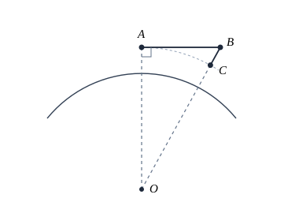
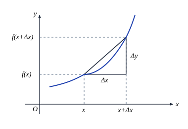
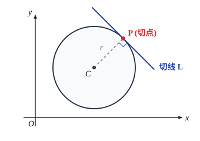
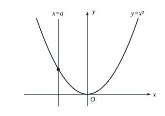
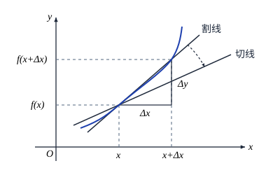
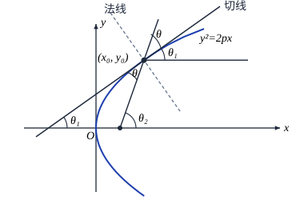
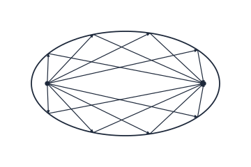
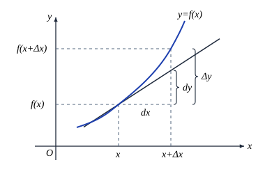
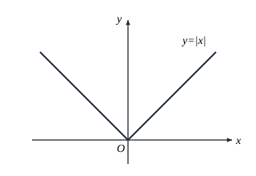
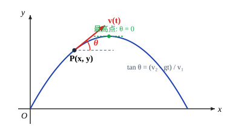

第四章 微分
第四章 微分
§1 微分和导数
微分概念的导出背景
人们通常所说的"微积分"实际上包含了微分和积分两个部分，这一章我们先来谈谈微分.
当一个函数的自变量有微小的改变时，它的因变量一般说来也会有一个相应的改变. 微分的原始思想在于去寻找一种方法，当因变量的改变也是很微小的时候，能够简便而又比较精确地估计出这个改变量.
我们先来看一个简单的例子.
维持物体围绕地球作永不着地（理论上）的飞行所需要的最低速度称为第一宇宙速度. 在中学里，利用计算向心加速度的办法已经求出这个速度约为 $7.9\,\mathrm{km/s}$，现在我们改用另一种思路去推导它.
设卫星当前时刻在地球表面附近的 $A$ 点沿着水平方向飞行，假如没有外力影响的话，那么它在一秒钟后本应到达 $B$ 点. 但事实上它要受到地球的引力，因而实际到达的并非是 $B$ 点而是 $C$ 点，$BC = 4.9\,\mathrm{m}$ 是自由落体在重力加速度的作用下，第一秒中所走过的距离.
容易看出，若卫星在沿地球的一个同心圆轨道运行，也就是作环绕地球的飞行，则 $C$ 点与地心 $O$ 的距离与 $A$ 点到 $O$ 的距离相等，由此可以推断出卫星每秒飞行距离至少为直线段 $AB$ 的长度，此即卫星应具有的最低速度. 由于 $\triangle AOB$ 是直角三角形，$OA$ 和 $OC$ 可近似地取为地球的平均半径 $6371\,\mathrm{km}$，也就是 $6\,371\,000\,\mathrm{m}$，于是由勾股定理得到
$$AB^2 = (6\,371\,000 + 4.9)^2 - (6\,371\,000)^2.$$显然，按上式去计算 $AB^2$ 是不可取的——这将导致两个 $O(10^{13})$ 量级的数直接相减，工作量大且不说，在字长较短的计算机上还可能产生较大的误差.

利用乘法公式
$$a^2 - b^2 = (a + b)(a - b),$$可将上式改写为
$$\begin{aligned} AB^2 &= (6\,371\,000 + 4.9 + 6\,371\,000)(6\,371\,000 + 4.9 - 6\,371\,000)\\ &= 2 \times 6\,371\,000 \times 4.9 + 4.9^2. \end{aligned}$$由于 $4.9^2$ 这一项与 $2 \times 6\,371\,000 \times 4.9$ 这一项相比可以忽略不计，于是可以把计算简化为
$$AB^2 \approx 2 \times 6\,371\,000 \times 4.9.$$由此算出
$$AB \approx 7.9\,\mathrm{km}.$$这就是说，卫星的速度至少要达到每秒 $7.9\,\mathrm{km}$ 才能维持其围绕地球的飞行，此即所要求的第一宇宙速度.
上面所计算的 $AB^2$，实际上就是函数 $y = x^2$ 在 $x = 6\,371\,000$ 处，自变量出现了一个微小的改变量 $4.9$ 之后，函数值的相应改变量. 然而在计算过程中，我们并没有完全精确地去算
$$AB^2 = 2 \times 6\,371\,000 \times 4.9 + 4.9^2,$$而是抛弃了最后那一项对整个计算结果而言可以忽略的量，得到了具有足够精度的计算值. 这样的思想方法和处理过程恰恰就是微分概念的应用.
微分的定义
下面我们来考察一般情况. 如图 4.1.2 所示，设
$$y = f(x)$$是一个给定的函数，在点 $x$ 附近有定义. 若 $f(x)$ 的自变量在 $x$ 处产生了某个增量 $\Delta x$ 变成了 $x + \Delta x$（增量 $\Delta x$ 可正可负，但不为零），那么它的函数值也相应地产生了一个增量
$$\Delta y(x) = f(x + \Delta x) - f(x),$$这里的增量 $\Delta x$ 和 $\Delta y(x)$ 分别称为自变量和因变量的差分.（在不会发生混淆的场合，或者是无需特别指明自变量的时候，我们一般就将 $\Delta y(x)$ 简单地记为 $\Delta y$.）

若函数 $y = f(x)$ 在某一区间上的每一点都可微，则称 $f(x)$ 在该区间上可微.
由定义 4.1.1 知道，若 $f(x)$ 在 $x$ 处是可微的，那么当 $\Delta x \to 0$ 时 $\Delta y$ 也是无穷小量，且当 $g(x) \ne 0$ 时，成立等价关系
$$\Delta y \sim g(x)\Delta x.$$"$g(x)\Delta x$" 这一项也被称为 $\Delta y$ 的线性主要部分. 很明显，当 $|\Delta x|$ 充分小的时候，干脆就用 "$g(x)\Delta x$" 这一项来代替因变量的增量 $\Delta y$，所产生的偏差将是很微小的.
于是，当 $f(x)$ 在 $x$ 处可微且 $\Delta x \to 0$ 时，我们将 $\Delta x$ 称为自变量的微分，记作 $\mathrm{d}x$，而将 $\Delta y$ 的线性主要部分 $g(x)\mathrm{d}x$（即 $g(x)\Delta x$）称为因变量的微分，记作 $\mathrm{d}y$ 或 $\mathrm{d}f(x)$，这样就有了以下的微分关系式
$$\mathrm{d}y = g(x)\mathrm{d}x.$$函数 $y = \sqrt[3]{x^2}$ 虽然不是 $(-\infty, +\infty)$ 上的可微函数，但它在 $(-\infty, 0)$ 和 $(0, +\infty)$ 上却都是可微的（留作习题）.
需要注意的是，若函数 $f(x)$ 在 $x$ 处是可微的，那么当 $\Delta x \to 0$ 时必有 $\Delta y \to 0$，即 $f(x)$ 在 $x$ 处连续，所以我们有可微必定连续的结论. 但要注意该结论的逆命题不成立，如上例中的函数 $y = \sqrt[3]{x^2}$，它在 $x = 0$ 处显然连续，但我们已经知道它在这一点处不可微.
微分和导数
若 $f(x)$ 在 $x_0$ 处可微，则有关系式
$$\Delta y = g(x_0)\Delta x + o(\Delta x),$$由于 $g(x_0)$ 与 $\Delta x$ 无关，即知 $g(x_0)$ 是当 $\Delta x \to 0$ 时，因变量的差分与自变量的差分之比 $\dfrac{\Delta y}{\Delta x}$（称为差商）的极限值.
若函数 $y = f(x)$ 在某一区间上的每一点都可导，则称 $f(x)$ 在该区间上可导.
显然，$f(x)$ 在 $x_0$ 处的导数还有如下的等价定义
$$f'(x_0) = \lim_{x \to x_0}\frac{f(x) - f(x_0)}{x - x_0}.$$函数 $f(x)$ 的所有可导点的集合是 $f(x)$ 定义域的子集，定义 4.1.2 中的导数值 $f'(x)$ 可看成定义在这一子集上的一个新的函数，我们将它称为函数 $f(x)$ 的导函数，记为 $f'(x)$（或 $y'(x), \dfrac{\mathrm{d}f}{\mathrm{d}x}, \dfrac{\mathrm{d}y}{\mathrm{d}x}$），导函数一般就简称为导数.
由上面的讨论可以知道，若 $f(x)$ 在 $x$ 处可微，则它必定在 $x$ 处可导，而前面所述的函数 $g(x)$ 不是别的，正是它在这一点的导数值 $f'(x)$. 于是，差分的无穷小量关系式和微分关系式分别成为
$$\Delta y = f'(x)\Delta x + o(\Delta x)$$和
$$\mathrm{d}y = f'(x)\mathrm{d}x.$$因此，导数也可以看成是函数在可微的情况下，因变量的微分与自变量的微分之比，所以导数又被称为"微商". 这样，$\dfrac{\mathrm{d}y}{\mathrm{d}x}$ 既可以看成是一个完整的记号，也可以看成是微分之间的一种除法运算——这种观点有助于更深刻地理解微分和导数的本质及其相互关系.
反过来，$f(x)$ 在 $x$ 处可导也足以保证它在 $x$ 处可微. 由定义 4.1.2，这时存在极限
$$\lim_{\Delta x \to 0}\frac{\Delta y}{\Delta x} = f'(x),$$即
$$\lim_{\Delta x \to 0}\left[\frac{\Delta y}{\Delta x} - f'(x)\right] = 0.$$由无穷小量的定义，有
$$\frac{\Delta y}{\Delta x} - f'(x) = o(1),$$也就是
$$\Delta y - f'(x)\Delta x = o(1)\Delta x = o(\Delta x),$$由定义 4.1.1，$f(x)$ 在 $x$ 处可微.
定理 4.1.1 告诉我们，对一元函数来说，它在任一点的可微性与可导性是等价的. 因此，一元函数的微分与导数总是形影相随，是密切难分的"孪生兄弟".
习 题
- 1. 半径为 $1\,\mathrm{cm}$ 的铁球表面要镀一层厚度为 $0.01\,\mathrm{cm}$ 的铜，试用求微分的方法算出每只球需要用铜多少克？（铜的密度为 $8.9\,\mathrm{g/cm^3}$.）
- 2. 用定义证明：函数 $y = \sqrt[3]{x^2}$ 在它的整个定义域中，除了 $x = 0$ 这一点之外都是可微的.
§2 导数的意义和性质
产生导数的实际背景
从数学的发展历史来看，导数是伴随着微分的诞生而顺理成章地产生的，也就是说，人们先是有了微分的概念，随后才发现，对于处理微分问题来说，像
$$\lim_{\Delta x \to 0}\frac{\Delta y}{\Delta x} = \lim_{\Delta x \to 0}\frac{f(x + \Delta x) - f(x)}{\Delta x}$$这么一种特定形式的极限，即导数，是一个有力的工具.
说导数是处理微分问题的有力工具，是因为一方面从微分形式
$$\mathrm{d}y = f'(x)\mathrm{d}x$$来看，函数在任一点处的微分事实上都必须通过函数在这一点的导数来表达和计算；另一方面，在比较复杂的情况下（比如以后会学到的高阶微分和高阶导数，以及多元函数的微分和导数等），无论是形式地思考还是实际地处理问题，由导数入手都要比由微分入手更容易和简洁一些. 以后，人们进一步认识到，导数有它本身的意义，在数学研究及其实际应用方面都扮演着重要的角色.
微积分的发明人之一——Newton 最早用导数研究的是如何确定力学中运动物体的瞬时速度问题.
设一个运动物体在时刻 $t$ 的位移可以用函数 $s = s(t)$ 来描述，那么如何来求出它在这一时刻的速度呢？
因为它在时间段 $[t, t + \Delta t]$ 中位移的改变量为 $\Delta s = s(t + \Delta t) - s(t)$，所以当 $\Delta t$ 很小的时候，它在时刻 $t$ 的瞬时速度可以近似地用它在 $[t, t + \Delta t]$ 中的平均速度
$$\bar{v}(t) = \frac{\Delta s}{\Delta t} = \frac{s(t + \Delta t) - s(t)}{\Delta t}$$来代替. 但是，对于任意给定的 $\Delta t > 0$，这么算出的都只是平均速度而不是瞬时速度，真正的瞬时速度显然是当 $\Delta t \to 0$ 时 $\bar{v}(t)$ 的极限值，即
$$v(t) = \lim_{\Delta t \to 0}\frac{\Delta s}{\Delta t} = \lim_{\Delta t \to 0}\frac{s(t + \Delta t) - s(t)}{\Delta t}.$$于是
$$v(t) = s'(t),$$也即运动物体的速度是它的位移函数的导数.
我们可以将"速度"这个概念加以推广——凡是牵涉某个量的变化快慢的，诸如物理学中的光热磁电的各种传导率、化学中的反应速率、经济学中的资金流动速率、人口学中的人口增长速率，等等，统统都可以看成是广义的"速度"，因而都可以用导数来表达. 换句话说，导数实际上是因变量关于自变量的变化率.
比如，设函数 $p = p(t)$ 表示某个地区在时刻 $t$ 的人口数量，那么在时刻 $t + \Delta t$ 的人口数量就是 $p(t + \Delta t)$ 了，因此这个地区在从 $t$ 到 $t + \Delta t$ 的时段中，增加的人口数应为
$$\Delta p = p(t + \Delta t) - p(t).$$将单位时间中的人口增长数称为人口的增长速率，于是在 $[t, t + \Delta t]$ 时段中，该地区的人口平均增长速率为
$$\frac{\Delta p}{\Delta t} = \frac{p(t + \Delta t) - p(t)}{\Delta t},$$当 $\Delta t \to 0$ 时，便求得了该地区在时刻 $t$ 的人口增长速率为
$$p'(t) = \lim_{\Delta t \to 0}\frac{\Delta p}{\Delta t} = \lim_{\Delta t \to 0}\frac{p(t + \Delta t) - p(t)}{\Delta t},$$即人口增长速率是人口数量函数的导数.
导数的几何意义
导数研究的另一重大动力来自于数学本身——如何求出一条给定的曲线在曲线上某一点处的切线？
这个问题的起源可以追溯到古希腊时代对圆锥曲线的切线的研究. 到了 17 世纪前叶，在法国数学家 Descartes 和 Fermat 分别独立完成了解析几何的发明之后，它便转化成了如何确定方程为 $y = f(x)$ 的曲线在某一点处的切线斜率问题.
Descartes 和 Fermat 本人以及英国的数学和物理学家 Barrow（Newton 的老师）都对这一问题进行过深入的研究并取得一定的成果，而最终对此找到了系统而行之有效的分析方法的是微积分的另一位发明人、德国数学家 Leibniz.
我们首先来定义什么是切线.
在中学的解析几何里，我们学过圆和椭圆的切线（如图 4.2.1）. 那时的定义是：若一条直线与圆（椭圆）只相交于一点，那么称这条直线为该圆（椭圆）的切线. 但是要将这个定义运用到一般的曲线上去是不行的. 例如，对任意常数 $a$，直线 $x = a$ 与抛物线 $y = x^2$ 只有一个交点（如图 4.2.2），但它显然不是切线.

设 $y = f(x)$ 是平面上的一条光滑的连续曲线，$(x, f(x))$ 是曲线上的一个定点，而 $(x + \Delta x, f(x + \Delta x))$ 是曲线上的一个动点（一般假定它就在点 $(x, f(x))$ 的附近）. 显然，过 $(x, f(x))$ 和 $(x + \Delta x, f(x + \Delta x))$ 两点可以惟一确定曲线的一条过点 $(x, f(x))$ 的割线，并且，当点 $(x + \Delta x, f(x + \Delta x))$ 在曲线上移动时将引起割线位置的不断变化. 曲线的切线的严格定义应该是这样的：如果在点 $(x + \Delta x, f(x + \Delta x))$ 沿着曲线无限趋近于点 $(x, f(x))$（即 $\Delta x \to 0$）时，这些变化的割线存在着惟一的极限位置，则处于这个极限位置的直线就被称为曲线 $y = f(x)$ 在点 $(x, f(x))$ 处的切线（如图 4.2.3）.


设过点 $(x, f(x))$ 的切线已经作出，我们来求它的斜率. 从图中可以看出，割线的斜率为
$$\frac{\Delta y}{\Delta x} = \frac{f(x + \Delta x) - f(x)}{\Delta x},$$随着 $\Delta x$ 越来越接近于 $0$，$\dfrac{\Delta y}{\Delta x}$ 也就越来越接近切线的斜率. 因此，过点 $(x, f(x))$ 的切线斜率就是极限
$$\lim_{\Delta x \to 0}\frac{\Delta y}{\Delta x} = \lim_{\Delta x \to 0}\frac{f(x + \Delta x) - f(x)}{\Delta x}$$的值，即 $f(x)$ 在 $x$ 处的导数值 $f'(x)$——这就是导数的几何意义.
由此进一步可得，曲线 $y = f(x)$ 在点 $P_0(x_0, f(x_0))$ 处的切线方程是
$$y - f(x_0) = f'(x_0)(x - x_0).$$过 $P_0$ 点且与切线垂直的直线称为曲线 $y = f(x)$ 在点 $P_0$ 处的法线，于是当 $f'(x_0) \ne 0$ 时，在点 $P_0$ 处的法线方程是
$$y - f(x_0) = -\frac{1}{f'(x_0)}(x - x_0).$$Leibniz 的巨大贡献之一，就是发现了曲线的切线斜率与函数的导数之间的联系，同时得到了计算导数的一般方法. 从这个意义上来说，对任意一个能够写出表达式的函数，求它的曲线在任意一点处（只要在该点的切线存在）的切线方程问题已经迎刃而解了.
$$= \sqrt{2p}\lim_{\Delta x \to 0}\frac{\Delta x}{(\sqrt{x_0 + \Delta x} + \sqrt{x_0}) \cdot \Delta x} = \frac{\sqrt{p}}{\sqrt{2x_0}},$$
由此很容易求得它在任意一点处的切线方程.
从这个结论出发可以得到抛物线的一个重要的光学性质.
记抛物线的方程为 $y^2 = 2px\,(p > 0)$，如图 4.2.4，设它在点 $(x_0, y_0)$ 处的切线与 $x$ 轴的夹角为 $\theta_1$，由于 $y_0 = \sqrt{2px_0}$，该切线的斜率可以写成
$$\tan\theta_1 = \frac{\sqrt{p}}{\sqrt{2x_0}} = \frac{p}{y_0},$$再记点 $(x_0, y_0)$ 与抛物线的焦点 $\left(\dfrac{p}{2}, 0\right)$ 的连线与 $x$ 轴的夹角为 $\theta_2$，该连线与抛物线在点 $(x_0, y_0)$ 处的切线的夹角为 $\theta$，则有
$$\tan\theta_2 = \frac{y_0}{x_0 - \dfrac{p}{2}},$$于是
$$\tan\theta = \frac{\tan\theta_2 - \tan\theta_1}{1 + \tan\theta_2 \cdot \tan\theta_1} = \frac{\dfrac{y_0}{x_0 - \dfrac{p}{2}} - \dfrac{p}{y_0}}{1 + \dfrac{y_0}{x_0 - \dfrac{p}{2}} \cdot \dfrac{p}{y_0}} = \frac{p}{y_0} = \tan\theta_1,$$即 $\theta$ 恰好等于切线与 $x$ 轴的夹角 $\theta_1$.

根据光的反射定律，入射角（入射光线与反射面的法线的夹角）等于反射角（反射光线与反射面的法线的夹角），可知任意一束从抛物线焦点处出发的光线，经抛物线的反射，反射光线与抛物线的对称轴平行. 根据这一原理，将抛物线绕它的对称轴旋转，得到一个旋转抛物面，于是，放在焦点处的点光源发出的光线，经过旋转抛物面反射后，成为一束平行于对称轴的光线射出；反过来，由于光路的可逆性，平行于旋转抛物面对称轴的入射光线，经过旋转抛物面的反射，汇聚于它的焦点上. 探照灯、伞形太阳灶、抛物面天线等都是这一原理实际应用的例子.
$$= \frac{b}{a}\lim_{\Delta x \to 0}\frac{x_0^2 - (x_0 + \Delta x)^2}{(\sqrt{a^2 - (x_0 + \Delta x)^2} + \sqrt{a^2 - x_0^2}) \cdot \Delta x} = \frac{b}{a}\frac{-x_0}{\sqrt{a^2 - x_0^2}}.$$
于是它在 $(x_0, y_0)$ 处的切线方程为
$$y - y_0 = \frac{b}{a}\frac{-x_0}{\sqrt{a^2 - x_0^2}}(x - x_0),$$注意到 $(x_0, y_0)$ 位于椭圆上，即满足
$$y_0 = \frac{b}{a}\sqrt{a^2 - x_0^2},$$两边整理后便得到切线方程
$$\frac{x_0 \cdot x}{a^2} + \frac{y_0 \cdot y}{b^2} = 1,$$这正是我们在平面解析几何中已知的结论.
用与例 4.2.1 类似的方法可以证明椭圆的一个光学性质：从椭圆的一个焦点发出的任意一束光线，经椭圆反射后，反射光线必定经过它的另一个焦点（如图 4.2.5）（留作习题）.

利用导数的几何意义以及导数和微分的关系很容易给出微分的几何意义：它是用底边为 $\mathrm{d}x$、底角为 $\arctan f'(x)$ 的直角三角形的高 $\mathrm{d}y = f'(x)\mathrm{d}x$ 来近似代替 $\Delta y = f(x + \Delta x) - f(x)$（如图 4.2.6），其误差是 $\mathrm{d}x$ 的高阶无穷小量.

单侧导数
由于
$$f'(x_0) = \lim_{\Delta x \to 0}\frac{f(x_0 + \Delta x) - f(x_0)}{\Delta x},$$由极限存在的定义，函数 $f(x)$ 在 $x_0$ 处可导的充分必要条件是相应的左极限
$$f'_-(x_0) = \lim_{\Delta x \to 0-}\frac{f(x_0 + \Delta x) - f(x_0)}{\Delta x}$$和右极限
$$f'_+(x_0) = \lim_{\Delta x \to 0+}\frac{f(x_0 + \Delta x) - f(x_0)}{\Delta x}$$存在并且相等，我们把它们分别称为 $f(x)$ 在 $x_0$ 处的左导数和右导数. 换句话说，若 $f(x)$ 在 $x_0$ 处的左右导数中至少有一个不存在，或是左右导数都存在但不相等的话，$f(x)$ 在 $x_0$ 处就是不可导的.

要使 $f(x)$ 在 $x = 2$ 处可导，必须成立 $f'_-(2) = f'_+(2)$，由定义及上式，
$$f'_-(2) = \lim_{x \to 2-}\frac{f(x) - f(2)}{x - 2} = \lim_{x \to 2-}\frac{ax + 1 - (2a + 1)}{x - 2} = a;$$ $$f'_+(2) = \lim_{x \to 2+}\frac{f(x) - f(2)}{x - 2} = \lim_{x \to 2+}\frac{x^2 + b - (4 + b)}{x - 2} = \lim_{x \to 2+}\frac{x^2 - 4}{x - 2} = 4.$$因此 $a = 4$. 将 $a = 4$ 代入 $4 + b = 2a + 1$ 即得 $b = 5$. 这时 $f'(2) = 4$.
需要指出的是，对于在闭区间 $[a, b]$ 上定义的函数 $y = f(x)$，如果 $f(x)$ 在开区间 $(a, b)$ 可导，并且 $f(x)$ 在 $x = a$ 的右导数与在 $x = b$ 的左导数存在，则称 $f(x)$ 在闭区间 $[a, b]$ 可导. 如例 4.2.2 中的函数 $f(x) = \dfrac{b}{a}\sqrt{a^2 - x^2}$，当 $x = \pm a$ 时，相应的左右导数为 $f'_+(a) = -\infty$，$f'_-(-a) = +\infty$，我们称函数 $f(x) = \dfrac{b}{a}\sqrt{a^2 - x^2}$ 在 $x = a$ 的左导数与在 $x = -a$ 的右导数不存在，即 $f(x)$ 的可导区间为 $(-a, a)$. 但若将函数改为 $g(x) = \sqrt{(a^2 - x^2)^3}$，则容易验证 $g(x)$ 在闭区间 $[-a, a]$ 是可导的.
另外请注意，虽然同样都是单侧导数不存在，但例 4.2.2 中的函数曲线（即上半椭圆）在 $x = \pm a$ 处的切线是存在的，只是切线的倾角是 $\dfrac{\pi}{2}$ 而已，而例 4.2.4 中的函数曲线在 $x = 0$ 处的右侧根本就没有切线存在. 因此，在讨论问题时应注意区分这两种不同的情况.
习 题
-
1.
设 $f'(x_0)$ 存在，求下列各式的值：
(1) $\displaystyle\lim_{\Delta x \to 0}\frac{f(x_0 - \Delta x) - f(x_0)}{\Delta x}$；(2) $\displaystyle\lim_{x \to x_0}\frac{f(x) - f(x_0)}{x - x_0}$；(3) $\displaystyle\lim_{h \to 0}\frac{f(x_0 + h) - f(x_0 - h)}{h}$.
-
2.
(1) 用定义求抛物线 $y = 2x^2 + 3x - 1$ 的导函数；
(2) 求该抛物线上过点 $(-1, -2)$ 处的切线方程；(3) 求该抛物线上过点 $(-2, 1)$ 处的法线方程；(4) 问该抛物线上是否有点 $(a, b)$，过该点的切线与抛物线顶点与焦点的连线平行？
- 3. 设 $f(x)$ 为 $(-\infty, +\infty)$ 上的可导函数，且在 $x = 0$ 的某个邻域上成立 $$f(1 + \sin x) - 3f(1 - \sin x) = 8x + \alpha(x),$$ 其中 $\alpha(x)$ 是当 $x \to 0$ 时比 $x$ 高阶的无穷小量. 求曲线 $y = f(x)$ 在 $(1, f(1))$ 处的切线方程.
- 4. 证明：从椭圆的一个焦点发出的任一束光线，经椭圆反射后，反射光必定经过它的另一个焦点（如图 4.2.5）.
- 5. 证明：双曲线 $xy = a^2$ 上任一点处的切线与两坐标轴构成的直角三角形的面积恒为 $2a^2$.
-
6.
求函数在不可导点处的左导数和右导数.
(1) $y = |\sin x|$；(2) $y = \sqrt{1 - \cos x}$；(3) $y = e^{-|x|}$；(4) $y = |\ln(x + 1)|$.
-
7.
讨论下列函数在 $x = 0$ 处的可导性：
(1) $y = \begin{cases}|x|^{1+\alpha}\sin\dfrac{1}{x}\,(\alpha > 0), & x \ne 0,\\ 0, & x = 0;\end{cases}$(2) $y = \begin{cases}x^2, & x > 0,\\ ax + b, & x \le 0;\end{cases}$(3) $y = \begin{cases}x e^x, & x > 0,\\ ax^2, & x \le 0;\end{cases}$(4) $y = \begin{cases}e^{\frac{a}{x^2}}, & x \ne 0,\\ 0, & x = 0.\end{cases}$
- 8. 设 $f(x)$ 在 $x = 0$ 处可导，在什么情况下，$|f(x)|$ 在 $x = 0$ 处也可导？
- 9. 设 $f(x)$ 在 $[a, b]$ 上连续，$f(a) = f(b) = 0$，且 $f'_+(a) \cdot f'_-(b) > 0$，证明 $f(x)$ 在 $(a, b)$ 至少存在一个零点.
-
10.
设 $f(x)$ 在有限区间 $(a, b)$ 内可导，
(1) 若 $\displaystyle\lim_{x \to a+}f(x) = \infty$，那么能否断定也有 $\displaystyle\lim_{x \to a+}f'(x) = \infty$？(2) 若 $\displaystyle\lim_{x \to a+}f'(x) = \infty$，那么能否断定也有 $\displaystyle\lim_{x \to a+}f(x) = \infty$？
- 11. 设函数 $f(x)$ 满足 $f(0) = 0$. 证明 $f(x)$ 在 $x = 0$ 处可导的充分必要条件是：存在在 $x = 0$ 处连续的函数 $g(x)$，使得 $f(x) = xg(x)$，且此时成立 $f'(0) = g(0)$.
§3 导数四则运算和反函数求导法则
从定义出发求导函数
计算一个函数的导函数的运算称为对这个函数求导.
一些简单函数可以直接通过导数的定义（即差商的极限形式）来求导，当然也可以直接使用微分的定义（即差分的等价无穷小量关系）来求导，下面我们来分别看几个例子.
显然，常数函数 $y = C$ 的导数恒等于零.
进一步，利用等价关系 $a^{\Delta x} - 1 \sim \Delta x \cdot \ln a\,(a > 0, a \ne 1)$，可以得到
$$(a^x)' = (\ln a)\,a^x.$$由例 4.3.3，$y = e^x$ 的导函数恰为它的本身，这就是高等数学中讨论指数函数和对数函数时经常将底数取成 $e$ 的缘故. 以后我们会知道，若一个函数的导函数等于它本身，那么这个函数与 $y = e^x$ 至多相差一个常数因子，即它必为
$$y = Ce^x$$的形式.
注意，对于具体给定的实数 $\alpha$，幂函数 $y = x^\alpha$ 的定义域与可导范围可能扩大，例如：
$y = x^n$（$n$ 为自然数）的定义域为 $(-\infty, +\infty)$，它的导函数为
$$y' = nx^{n - 1},\quad x \in (-\infty, +\infty);$$$y = \dfrac{1}{x^n}$（$n$ 为自然数）的定义域为 $(-\infty, 0) \cup (0, +\infty)$，它的导函数为
$$y' = \frac{-n}{x^{n + 1}},\quad x \in (-\infty, 0) \cup (0, +\infty);$$$y = x^{\frac{2}{3}}$ 的定义域为 $(-\infty, +\infty)$，它的导函数为
$$y' = \frac{2}{3\sqrt[3]{x}},\quad x \in (-\infty, 0) \cup (0, +\infty);$$$y = x^{\frac{1}{2}}$ 的定义域为 $[0, +\infty)$，它的导函数为
$$y' = \frac{1}{2\sqrt{x}},\quad x \in (0, +\infty).$$除了少数几个最简单的函数之外，可以直接用定义较方便地求出导数的函数实在是微乎其微，因而就有必要对一般的函数导出一系列的求导运算法则，主要包括四则运算法则、反函数求导法则和复合函数求导法则，本节中我们先讨论前两个问题.
求导的四则运算法则
对于函数 $c_1f(x) + c_2g(x)$ 的微分，也有类似的结果：
$$\mathrm{d}[c_1f(x) + c_2g(x)] = c_1\mathrm{d}[f(x)] + c_2\mathrm{d}[g(x)].$$因为 $\log_a x = \dfrac{\ln x}{\ln a}$，由定理 4.3.1 和前面得到的对数函数的导数公式，即有
$$(\log_a x)' = \frac{1}{\ln a}(\ln x)' = \frac{1}{x\ln a}.$$结合定理 4.3.2 和定理 4.3.3，即有如下推论：
反函数求导法则
读者不难由同样途径得到
$$(\arccos x)' = -\frac{1}{\sqrt{1 - x^2}}$$和
$$(\operatorname{arccot} x)' = -\frac{1}{1 + x^2}.$$作为习题，请读者自行导出其他反双曲函数的导函数
$$(\operatorname{ch}^{-1} x)' = \frac{1}{\sqrt{x^2 - 1}}$$和
$$(\operatorname{th}^{-1} x)' = (\operatorname{cth}^{-1} x)' = \frac{1}{1 - x^2}.$$将双曲函数（及其反函数）的导数与三角函数（及其反函数）的相应结果加以比较的话，就可以发现，不仅双曲函数本身间的函数关系与三角函数有类似之处，而且它们（乃至它们的反函数）的导函数也有颇为相像的相互关系.
下面我们列出基本初等函数的导数和微分公式：
| 导数公式 | 微分公式 |
|---|---|
| $(C)' = 0$ | $\mathrm{d}(C) = 0 \cdot \mathrm{d}x = 0$ |
| $(x^\alpha)' = \alpha x^{\alpha - 1}$ | $\mathrm{d}(x^\alpha) = \alpha x^{\alpha - 1}\mathrm{d}x$ |
| $(\sin x)' = \cos x$ | $\mathrm{d}(\sin x) = \cos x\,\mathrm{d}x$ |
| $(\cos x)' = -\sin x$ | $\mathrm{d}(\cos x) = -\sin x\,\mathrm{d}x$ |
| $(\tan x)' = \sec^2 x$ | $\mathrm{d}(\tan x) = \sec^2 x\,\mathrm{d}x$ |
| $(\cot x)' = -\csc^2 x$ | $\mathrm{d}(\cot x) = -\csc^2 x\,\mathrm{d}x$ |
| $(\sec x)' = \tan x\sec x$ | $\mathrm{d}(\sec x) = \tan x\sec x\,\mathrm{d}x$ |
| $(\csc x)' = -\cot x\csc x$ | $\mathrm{d}(\csc x) = -\cot x\csc x\,\mathrm{d}x$ |
| $(\arcsin x)' = \dfrac{1}{\sqrt{1 - x^2}}$ | $\mathrm{d}(\arcsin x) = \dfrac{\mathrm{d}x}{\sqrt{1 - x^2}}$ |
| $(\arccos x)' = -\dfrac{1}{\sqrt{1 - x^2}}$ | $\mathrm{d}(\arccos x) = -\dfrac{\mathrm{d}x}{\sqrt{1 - x^2}}$ |
| $(\arctan x)' = \dfrac{1}{1 + x^2}$ | $\mathrm{d}(\arctan x) = \dfrac{\mathrm{d}x}{1 + x^2}$ |
| $(\operatorname{arccot} x)' = -\dfrac{1}{1 + x^2}$ | $\mathrm{d}(\operatorname{arccot} x) = -\dfrac{\mathrm{d}x}{1 + x^2}$ |
| $(a^x)' = \ln a \cdot a^x$ | $\mathrm{d}(a^x) = \ln a \cdot a^x\mathrm{d}x$ |
| 特别地 $(e^x)' = e^x$ | 特别地 $\mathrm{d}(e^x) = e^x\mathrm{d}x$ |
| $(\log_a x)' = \dfrac{1}{\ln a} \cdot \dfrac{1}{x}$ | $\mathrm{d}(\log_a x) = \dfrac{1}{\ln a} \cdot \dfrac{\mathrm{d}x}{x}$ |
| 特别地 $(\ln x)' = \dfrac{1}{x}$ | 特别地 $\mathrm{d}(\ln x) = \dfrac{\mathrm{d}x}{x}$ |
| $(\operatorname{sh} x)' = \operatorname{ch} x$ | $\mathrm{d}(\operatorname{sh} x) = \operatorname{ch} x\,\mathrm{d}x$ |
| $(\operatorname{ch} x)' = \operatorname{sh} x$ | $\mathrm{d}(\operatorname{ch} x) = \operatorname{sh} x\,\mathrm{d}x$ |
| $(\operatorname{th} x)' = \operatorname{sech}^2 x$ | $\mathrm{d}(\operatorname{th} x) = \operatorname{sech}^2 x\,\mathrm{d}x$ |
| $(\operatorname{cth} x)' = -\operatorname{csch}^2 x$ | $\mathrm{d}(\operatorname{cth} x) = -\operatorname{csch}^2 x\,\mathrm{d}x$ |
| $(\operatorname{sh}^{-1} x)' = \dfrac{1}{\sqrt{1 + x^2}}$ | $\mathrm{d}(\operatorname{sh}^{-1} x) = \dfrac{\mathrm{d}x}{\sqrt{1 + x^2}}$ |
| $(\operatorname{ch}^{-1} x)' = \dfrac{1}{\sqrt{x^2 - 1}}$ | $\mathrm{d}(\operatorname{ch}^{-1} x) = \dfrac{\mathrm{d}x}{\sqrt{x^2 - 1}}$ |
| $(\operatorname{th}^{-1} x)' = (\operatorname{cth}^{-1} x)' = \dfrac{1}{1 - x^2}$ | $\mathrm{d}(\operatorname{th}^{-1} x) = \mathrm{d}(\operatorname{cth}^{-1} x) = \dfrac{\mathrm{d}x}{1 - x^2}$ |
从表中可以看出，所有基本初等函数的导函数都仍然是基本初等函数的有限次四则运算和复合，所以，在这些函数的定义域内，至多除去有限个点，它们不仅可导而且导函数连续.（这有限个点属于这些函数本身的定义域而不属于它们的导函数的定义域，如 $y = \sqrt[3]{x^2}$ 在整个 $(-\infty, +\infty)$ 上连续，但其导函数
$$y' = \frac{2}{3\sqrt[3]{x}}$$在 $x = 0$ 处无定义，所以它的导数存在并连续的范围仅限于 $(-\infty, 0) \cup (0, +\infty)$.）
定理 4.3.1 和定理 4.3.2 的结论可以推广到多个函数的情况：
(1) 多个函数线性组合的导数
$$\left[\sum_{i=1}^{n}c_if_i(x)\right]' = \sum_{i=1}^{n}c_if_i'(x),$$其中 $c_i\,(i = 1, 2, \dots, n)$ 为常数.
(2) 多个函数乘积的导数
$$\left[\prod_{i=1}^{n}f_i(x)\right]' = \sum_{i=1}^{n}\left\{f_i'(x)\prod_{\substack{j=1\\j \ne i}}^{n}f_j(x)\right\}.$$请读者利用数学归纳法自行证明这两个公式，下面我们分别举一个例子.
习 题
- 1. 用定义证明 $(\cos x)' = -\sin x$.
-
2.
证明：
(1) $(\csc x)' = -\cot x\csc x$；(2) $(\cot x)' = -\csc^2 x$；(3) $(\arccos x)' = -\dfrac{1}{\sqrt{1 - x^2}}$；(4) $(\operatorname{arccot} x)' = -\dfrac{1}{1 + x^2}$；(5) $(\operatorname{ch}^{-1} x)' = \dfrac{1}{\sqrt{x^2 - 1}}$；(6) $(\operatorname{th}^{-1} x)' = (\operatorname{cth}^{-1} x)' = \dfrac{1}{1 - x^2}$.
-
3.
求下列函数的导函数：
(1) $f(x) = 3\sin x + \ln x - \sqrt{x}$；(2) $f(x) = x\cos x + x^2 + 3$；(3) $f(x) = (x^2 + 7x - 5)\sin x$；(4) $f(x) = x^2(3\tan x + 2\sec x)$；(5) $f(x) = e^x\sin x - 4\cos x + \dfrac{3}{\sqrt{x}}$；(6) $f(x) = \dfrac{2\sin x + x - 2^x}{\sqrt[3]{x^2}}$；(7) $f(x) = \dfrac{1}{x + \cos x}$；(8) $f(x) = \dfrac{x\sin x - 2\ln x}{\sqrt{x} + 1}$；(9) $f(x) = \dfrac{x^2 + \cot x}{\ln x}$；(10) $f(x) = \dfrac{x\sin x + \cos x}{x\sin x - \cos x}$；(11) $f(x) = (e^x + \log_3 x)\arcsin x$；(12) $f(x) = (\csc x - 3\ln x)x^2\operatorname{sh} x$；(13) $f(x) = \dfrac{x + \sec x}{x - \csc x}$；(14) $f(x) = \dfrac{x + \sin x}{\arctan x}$.
- 4. 求曲线 $y = \ln x$ 在 $(e, 1)$ 处的切线方程和法线方程.
- 5. 当 $a$ 取何值时，直线 $y = x$ 能与曲线 $y = \log_a x$ 相切，切点在哪里？
- 6. 求曲线 $y = x^n\,(n \in \mathbb{N}^*)$ 上过点 $(1, 1)$ 的切线与 $x$ 轴的交点的横坐标 $x_n$，并求出极限 $\displaystyle\lim_{n \to \infty}y(x_n)$.
- 7. 对于抛物线 $y = ax^2 + bx + c$，设集合 $$S_1 = \{(x, y)\,|\,\text{过 }(x, y)\text{ 可以作该抛物线的两条切线}\},$$ $$S_2 = \{(x, y)\,|\,\text{过 }(x, y)\text{ 只可以作该抛物线的一条切线}\},$$ $$S_3 = \{(x, y)\,|\,\text{过 }(x, y)\text{ 不能作该抛物线的切线}\},$$ 请分别求出这三个集合中的元素所满足的条件.
-
8.
(1) 设 $f(x)$ 在 $x = x_0$ 处可导，$g(x)$ 在 $x = x_0$ 处不可导，证明 $c_1f(x) + c_2g(x)\,(c_2 \ne 0)$ 在 $x = x_0$ 处也不可导.
(2) 设 $f(x)$ 与 $g(x)$ 在 $x = x_0$ 处都不可导，能否断定 $c_1f(x) + c_2g(x)$ 在 $x = x_0$ 处一定可导或一定不可导？
- 9. 在上题的条件下，讨论 $f(x)g(x)$ 在 $x = x_0$ 处的可导情况.
- 10. 设 $f_{ij}(x)\,(i, j = 1, 2, \dots, n)$ 为同一区间上的可导函数，证明在该区间上成立 $$\frac{\mathrm{d}}{\mathrm{d}x}\begin{vmatrix} f_{11}(x) & f_{12}(x) & \cdots & f_{1n}(x)\\ f_{21}(x) & f_{22}(x) & \cdots & f_{2n}(x)\\ \vdots & \vdots & & \vdots\\ f_{n1}(x) & f_{n2}(x) & \cdots & f_{nn}(x) \end{vmatrix} = \sum_{k=1}^{n}\begin{vmatrix} f_{11}(x) & f_{12}(x) & \cdots & f_{1n}(x)\\ \vdots & \vdots & & \vdots\\ f'_{k1}(x) & f'_{k2}(x) & \cdots & f'_{kn}(x)\\ \vdots & \vdots & & \vdots\\ f_{n1}(x) & f_{n2}(x) & \cdots & f_{nn}(x) \end{vmatrix}.$$
§4 复合函数求导法则及其应用
复合函数求导法则
对于复合函数的求导，我们有如下的结论.
复合函数的求导规则可以写成
$$\frac{\mathrm{d}y}{\mathrm{d}x} = \frac{\mathrm{d}y}{\mathrm{d}u} \cdot \frac{\mathrm{d}u}{\mathrm{d}x}.$$我们一般称它为链式法则.
由导数与微分的关系，复合函数的微分公式为
$$\mathrm{d}[f(g(x))] = f'(u)g'(x)\mathrm{d}x.$$对于函数 $y = e^{-x}$，令 $y = e^u, u = -x$，便可得到
$$\frac{\mathrm{d}}{\mathrm{d}x}(e^{-x}) = \frac{\mathrm{d}}{\mathrm{d}u}(e^u)\frac{\mathrm{d}u}{\mathrm{d}x} = \left.(e^u)'\right|_{u = -x} \cdot \frac{\mathrm{d}(-x)}{\mathrm{d}x} = -e^{-x}.$$这就是例 4.3.11 中求双曲函数的导函数时所得过的结论.
读者在运算熟练之后，就可以默记 $u$ 后直接求导，而不必写出 $u$ 关于 $x$ 的表达式，如
$$(\sqrt{1 + x^2})' = \frac{1}{2\sqrt{1 + x^2}} \cdot (1 + x^2)' = \frac{x}{\sqrt{1 + x^2}}.$$关于复合函数的求导，我们指出以下几点：
(1) 无论在理论分析还是解决实际问题中，遇到的函数一般都是复合函数，即便如最简单的正弦波
$$y = A\sin(\omega t + \varphi)$$也是复合函数. 因此，复合函数的链式求导法则是最常用的求导工具之一.
(2) 上述的链式法则可以推广到多重复合函数的情况：
$$\frac{\mathrm{d}}{\mathrm{d}x}(f_1(f_2(f_3(\cdots f_n(x)\cdots)))) = \frac{\mathrm{d}f_1}{\mathrm{d}f_2} \cdot \frac{\mathrm{d}f_2}{\mathrm{d}f_3} \cdot \cdots \cdot \frac{\mathrm{d}f_{n-1}}{\mathrm{d}f_n} \cdot \frac{\mathrm{d}f_n}{\mathrm{d}x},$$读者可用数学归纳法自行证明.
(3) 形如
$$y = f(x) = u(x)^{v(x)}$$的函数称为幂指函数，对于幂指函数的求导，常采用的方法叫对数求导法，计算时，先对两边取对数，令
$$z(x) = \ln y = v(x)\ln u(x),$$再分别求导. 一方面，
$$z'(x) = [v(x)\ln u(x)]' = v'(x)\ln u(x) + v(x)\frac{u'(x)}{u(x)},$$另一方面，将 $z(x) = \ln y$ 看作复合函数
$$\begin{cases}z = \ln y,\\ y = f(x),\end{cases}$$则有
$$z'(x) = \frac{y'}{y}.$$综合两式，就得到
$$y' = y\left[v'(x)\ln u(x) + v(x)\frac{u'(x)}{u(x)}\right] = u(x)^{v(x)}\left[v'(x)\ln u(x) + v(x)\frac{u'(x)}{u(x)}\right].$$读者应掌握这个方法的思想并会实际应用，而不必死记上面的公式.
(4) 到目前为止我们所得到的全套的求导和求微分的运算规则（包括函数的四则运算、反函数、复合函数的求导和求微分公式）可以列表如下：
| 导数运算法则 | 微分运算法则 |
|---|---|
| 线性组合 $(c_1f + c_2g)' = c_1f' + c_2g'$ | $\mathrm{d}(c_1f + c_2g) = c_1\mathrm{d}f + c_2\mathrm{d}g$ |
| 乘 法 $(f \cdot g)' = f'g + fg'$ | $\mathrm{d}(f \cdot g) = g\mathrm{d}f + f\mathrm{d}g$ |
| 除 法 $\left(\dfrac{f}{g}\right)' = \dfrac{f'g - fg'}{g^2}$ | $\mathrm{d}\left(\dfrac{f}{g}\right) = \dfrac{g\mathrm{d}f - f\mathrm{d}g}{g^2}$ |
| 反函数 $[f^{-1}(y)]' = \dfrac{1}{f'(x)}$ | $\mathrm{d}x = \dfrac{\mathrm{d}y}{f'(x)} = [f^{-1}(y)]'\mathrm{d}y$ |
| 复合函数 $[f(g(x))]' = f'(u)g'(x)$ | $\mathrm{d}[f(g(x))] = f'(u)g'(x)\mathrm{d}x$ |
由于初等函数是由基本初等函数经过有限次四则运算和复合的产物，有了 §3 中的基本初等函数的导函数表再加上这张表，初等函数的求导和求微分问题已经得到解决.
一阶微分的形式不变性
复合函数的微分公式为
$$\mathrm{d}[f(g(x))] = f'(u)g'(x)\mathrm{d}x,$$由于 $\mathrm{d}u = g'(x)\mathrm{d}x$，代入上式就得到它的等价表示形式
$$\mathrm{d}[f(u)] = f'(u)\mathrm{d}u,$$这里 $u = g(x)$ 是中间变量，$x$ 才是真正的自变量. 但我们发现，它与以 $u$ 为自变量的函数 $y = f(u)$ 的微分式
$$\mathrm{d}[f(u)] = f'(u)\mathrm{d}u$$一模一样. 换句话说，不论 $u$ 是自变量还是中间变量，函数 $y = f(u)$ 的微分形式是相同的，这被称为"一阶微分的形式不变性".
这是一阶微分的一个非常重要的性质，有了这个"形式不变性"作保证，我们拿到一个函数 $y = f(u)$ 之后，就可以按 $u$ 是自变量去求得它的微分 $f'(u)\mathrm{d}u$，而无须顾忌此时 $u$ 究竟真的是自变量，还是一个受自变量 $x$ 制约的中间变量.
隐函数求导与求微分
从第一章中已经知道，在满足一定的条件下（我们将在学习多元函数的微分学时再来详细探讨这些条件），方程
$$F(x, y) = 0$$决定了一个 $y$ 关于 $x$ 的函数 $y = y(x)$，我们称它为隐函数. 有些隐函数可以通过某种方法解出 $y$ 关于 $x$ 的一般变化规律，化成显函数 $y = f(x)$ 形式（称为隐函数的显化），如椭圆的标准方程
$$\frac{x^2}{a^2} + \frac{y^2}{b^2} = 1$$确定了上下半平面上的两个显函数
$$y = \pm\frac{b}{a}\sqrt{a^2 - x^2}\quad (-a \le x \le a).$$但是更多的是隐函数不能被显化的情况，如高次的二元代数方程
$$F(x, y) = y^5 + ax^2y^4 + bxy^2 + cxy + d = 0,$$尽管由代数基本定理，对任意实数 $x$，至少存在一个实数 $y$ 使得 $F(x, y) = 0$，即 $F(x, y) = 0$ 至少决定了一个 $y$ 关于 $x$ 的隐函数，但由 Galois 理论，一般不能找到它的显函数形式.
对于隐函数的求导与求微分问题，可以利用复合函数的求导法则或一阶微分的形式不变性来求得，而无须从隐函数解出显函数.
而等式的右边为
$$\mathrm{d}(\cos\sqrt{x}) = -\frac{\sin\sqrt{x}}{2\sqrt{x}}\mathrm{d}x,$$所以
$$2y(\cos y^2)\mathrm{d}y = -\frac{\sin\sqrt{x}}{2\sqrt{x}}\mathrm{d}x,$$即得到 $y$ 的导数
$$\frac{\mathrm{d}y}{\mathrm{d}x} = -\frac{\sin\sqrt{x}}{4\sqrt{x}\,y(\cos y^2)}.$$注意本例也可以通过对方程两边求导，利用复合函数的求导法则来求得. 读者也可对本例中的隐函数的显式形式
$$y = \pm\sqrt{\arcsin(\cos\sqrt{x})}$$直接求导函数 $y'(x)$，并将运算过程加以比较.
对方程两边同时求导或求微分的方法，无论对于显函数、可显化的隐函数抑或不可显化的隐函数都能有效地使用，可以说是最重要的方法之一. 要提醒注意的是，在用求导的方法时，要将 $y$ 看作是 $x$ 的函数，从而利用复合函数的求导法则；至于求微分的方法，在目前阶段，只适用于一部分隐函数，而对于一般的隐函数，则要用到多元函数的一阶微分形式不变性，这将在多元函数的微分学部分加以讨论.
这样求出的导函数中大多仍然含有隐函数 $y$，但就具体使用而言，一般来说是无妨于事的，相反有时使用起来更为方便.
复合函数求导法则的其他应用
复合函数的求导法则给出了一个相当一般的求导方法，许多求导公式都可以看成是它的特例.
例如，可以将 $y = \dfrac{1}{g(x)}$ 看成是由
$$\begin{cases}y = \dfrac{1}{u},\\ u = g(x)\end{cases}$$复合而成的函数，则由复合函数的求导公式，
$$\left(\frac{1}{g(x)}\right)' = \left(\frac{1}{u}\right)' \cdot g'(x) = -\frac{g'(x)}{u^2} = -\frac{g'(x)}{[g(x)]^2},$$这就是前面得到的函数的倒数的求导公式.
再比如，假定 $y = f(x)$ 满足反函数求导定理的条件，将它的反函数记为 $x = f^{-1}(y)$，则成立
$$x = f^{-1}(f(x)),$$对这个式子两边求导，右边利用链式法则，即有
$$1 = (x)' = [f^{-1}(f(x))]' = [f^{-1}(y)]' \cdot f'(x),$$或者写成
$$[f^{-1}(y)]' = \frac{1}{f'(x)},$$这正是反函数求导定理的结论. 因此，反函数求导公式也可以看成是复合函数求导法则的特殊情况.
作为一个实际应用的例子，下面我们用它来导出参数形式的函数的导数公式.
设自变量 $x$ 和因变量 $y$ 的函数关系由参数形式
$$\begin{cases}x = \varphi(t),\\ y = \psi(t),\end{cases}\quad \alpha \le t \le \beta$$确定，其中 $\varphi(t)$ 和 $\psi(t)$ 都是 $t$ 的可微函数，$\varphi(t)$ 严格单调且 $\varphi'(t) \ne 0$.
由反函数求导法则（定理 4.3.4），可知 $x = \varphi(t)$ 的反函数 $t = \varphi^{-1}(x)$ 存在，且成立
$$(\varphi^{-1}(x))' = \frac{1}{\varphi'(t)},$$这样，$y$ 关于 $x$ 的函数关系可以写成
$$y = \psi(t) = \psi(\varphi^{-1}(x)),$$由复合函数求导法则，即得到
$$\frac{\mathrm{d}y}{\mathrm{d}x} = \frac{\mathrm{d}y}{\mathrm{d}t} \cdot \frac{\mathrm{d}t}{\mathrm{d}x} = \frac{\mathrm{d}(\psi(t))}{\mathrm{d}t} \cdot \frac{\mathrm{d}(\varphi^{-1}(x))}{\mathrm{d}t} = \frac{\psi'(t)}{\varphi'(t)},$$这就是参数形式的函数的导数公式，它也可以看成是由微分形式
$$\begin{cases}\mathrm{d}y = \psi'(t)\mathrm{d}t,\\ \mathrm{d}x = \varphi'(t)\mathrm{d}t,\end{cases}$$两边分别相除的结果.
的一点的运动轨迹，也就是摆线（即旋轮线）的方程（如图 1.2.6 和图 7.4.7）.
由参数形式的函数的求导公式，即得
$$\frac{\mathrm{d}y}{\mathrm{d}x} = \frac{(1 - \cos t)'}{(t - \sin t)'} = \frac{\sin t}{1 - \cos t} = \cot\frac{t}{2}.$$
最后指出，显式表示、隐式表示和参数表示是表达函数的三种重要形式，各有不同的适用场合，有很多函数只能用其中的某一种来表达. 即使有些函数能够用它们中的任何一种来表达，运算的难易和繁简程度也可以大相径庭，因此必须全面地掌握相应的求导公式，根据实际情况选择使用.
举一个简单的例子，如果想求出椭圆上某一点的导数，既可以从它的显函数形式
$$y = \pm\frac{b}{a}\sqrt{a^2 - x^2}\quad (-a \le x \le a)$$入手，得到
$$y' = \pm\frac{b}{a}\frac{1}{2}\frac{-2x}{\sqrt{a^2 - x^2}} = \mp\frac{b}{a}\frac{x}{\sqrt{a^2 - x^2}}\left(= -\frac{b^2}{a^2}\frac{x}{\pm\dfrac{b}{a}\sqrt{a^2 - x^2}} = -\frac{b^2x}{a^2y}\right);$$也可以通过它的参数方程
$$\begin{cases}x = a\cos t,\\ y = b\sin t,\end{cases}\quad 0 \le t \le 2\pi,$$由参数形式的函数的求导公式，得到
$$\frac{\mathrm{d}y}{\mathrm{d}x} = \frac{(b\sin t)'}{(a\cos t)'} = \frac{b\cos t}{-a\sin t}\left(= -\frac{b^2(a\cos t)}{a^2(b\sin t)} = -\frac{b^2x}{a^2y}\right);$$但最简洁的是从它的标准方程即隐函数
$$\frac{x^2}{a^2} + \frac{y^2}{b^2} = 1$$入手，利用复合函数的求导法则或一阶微分形式的不变性，由
$$\mathrm{d}\left(\frac{x^2}{a^2}\right) + \mathrm{d}\left(\frac{y^2}{b^2}\right) = \frac{2x}{a^2}\mathrm{d}x + \frac{2y}{b^2}\mathrm{d}y = 0,$$就直接得出
$$y' = \frac{\mathrm{d}y}{\mathrm{d}x} = -\frac{b^2x}{a^2y}.$$习 题
-
1.
求下列函数的导数：
(1) $y = (2x^2 - x + 1)^2$；(2) $y = e^{2x}\sin 3x$；(3) $y = \dfrac{1}{\sqrt{1 + x^3}}$；(4) $y = \sqrt{\dfrac{\ln x}{x}}$；(5) $y = \sin x^3$；(6) $y = \cos\sqrt{x}$；(7) $y = \sqrt{x + 1} - \ln(x + \sqrt{x + 1})$；(8) $y = \arcsin(e^{-x^2})$；(9) $y = \ln\left(x^2 - \dfrac{1}{x^2}\right)$；(10) $y = \dfrac{1}{(2x^2 + \sin x)^2}$；(11) $y = \dfrac{1 + \ln^2 x}{x\sqrt{1 - x^2}}$；(12) $y = \dfrac{x}{\sqrt{1 + \csc x^2}}$；(13) $y = \dfrac{2}{\sqrt[3]{2x^2 - 1}} + \dfrac{3}{\sqrt[4]{3x^3 + 1}}$；(14) $y = e^{-\sin^2 x}$；(15) $y = x\sqrt{a^2 - x^2} + \dfrac{x}{\sqrt{a^2 - x^2}}$.
-
2.
求下列函数的导数：
(1) $y = \ln\sin x$；(2) $y = \ln(\csc x - \cot x)$；(3) $y = \dfrac{1}{2}\left(x\sqrt{a^2 - x^2} + a^2\arcsin\dfrac{x}{a}\right)$；(4) $y = \ln(x + \sqrt{x^2 + a^2})$；(5) $y = \dfrac{1}{2}\left(x\sqrt{x^2 - a^2} - a^2\ln(x + \sqrt{x^2 - a^2})\right)$.
-
3.
设 $f(x)$ 可导，求下列函数的导数：
(1) $f(\sqrt[3]{x^2})$；(2) $f\left(\dfrac{1}{\ln x}\right)$；(3) $\sqrt{f(x)}$；(4) $\arctan f(x)$；(5) $f(f(e^{x^2}))$；(6) $\sin(f(\sin x))$；(7) $f\left(\dfrac{1}{f(x)}\right)$；(8) $\dfrac{1}{f(f(x))}$.
-
4.
用对数求导法求下列函数的导数：
(1) $y = x^x$；(2) $y = (x^3 + \sin x)^{\frac{1}{x}}$；(3) $y = \cos^x x$；(4) $y = \ln^x(2x + 1)$；(5) $y = x\dfrac{\sqrt{1 - x^2}}{\sqrt{1 + x^3}}$；(6) $y = \prod_{i=1}^{n}(x - x_i)$；(7) $y = \sin x^{x^x}$.
-
5.
对下列隐函数求 $\dfrac{\mathrm{d}y}{\mathrm{d}x}$：
(1) $y = x + \arctan y$；(2) $y + x e^y = 1$；(3) $\sqrt{x - \cos y} = \sin y - x$；(4) $xy - \ln(y + 1) = 0$；(5) $e^{x^2 + y} - xy^2 = 0$；(6) $\tan(x + y) - xy = 0$；(7) $2y\sin x + x\ln y = 0$；(8) $x^3 + y^3 - 3axy = 0$.
-
6.
设所给的函数可导，证明：
(1) 奇函数的导函数是偶函数；偶函数的导函数是奇函数；(2) 周期函数的导函数仍是周期函数.
- 7. 求曲线 $xy + \ln y = 1$ 在 $M(1, 1)$ 处的切线和法线方程.
-
8.
对下列参数形式的函数求 $\dfrac{\mathrm{d}y}{\mathrm{d}x}$：
(1) $\begin{cases}x = at^2,\\ y = bt^3;\end{cases}$(2) $\begin{cases}x = 1 - t^2,\\ y = t - t^3;\end{cases}$(3) $\begin{cases}x = t^2\sin t,\\ y = t^2\cos t;\end{cases}$(4) $\begin{cases}x = a e^{-t},\\ y = b e^t;\end{cases}$(5) $\begin{cases}x = a\cos^3 t,\\ y = a\sin^3 t;\end{cases}$(6) $\begin{cases}x = \operatorname{sh} at,\\ y = \operatorname{ch} bt;\end{cases}$(7) $\begin{cases}x = \dfrac{t + 1}{t},\\ y = \dfrac{t - 1}{t};\end{cases}$(8) $\begin{cases}x = \sqrt{1 + t},\\ y = \sqrt{1 - t};\end{cases}$(9) $\begin{cases}x = e^{-2t}\cos^2 t,\\ y = e^{-2t}\sin^2 t;\end{cases}$(10) $\begin{cases}x = \ln(1 + t^2),\\ y = t - \arctan t.\end{cases}$
- 9. 求曲线 $x = \dfrac{2t + t^2}{1 + t^3}, y = \dfrac{2t - t^2}{1 + t^3}$ 上与 $t = 1$ 对应的点处的切线和法线方程.
- 10. 设方程 $$\begin{cases}e^x = 3t^2 + 2t + 1,\\ t\sin y - y + \dfrac{\pi}{2} = 0\end{cases}$$ 确定 $y$ 为 $x$ 的函数，其中 $t$ 为参变量，求 $\left.\dfrac{\mathrm{d}y}{\mathrm{d}x}\right|_{t=0}$.
- 11. 证明曲线 $$\begin{cases}x = a(\cos t + t\sin t),\\ y = a(\sin t - t\cos t)\end{cases}$$ 上任一点的法线到原点的距离等于 $|a|$.
-
12.
设函数 $u = g(x)$ 在 $x = x_0$ 处连续，$y = f(u)$ 在 $u = u_0 = g(x_0)$ 处连续. 请举例说明，在以下情况中，复合函数 $y = f(g(x))$ 在 $x = x_0$ 处并非一定不可导：
(1) $u = g(x)$ 在 $x_0$ 处可导，而 $y = f(u)$ 在 $u_0$ 处不可导；(2) $u = g(x)$ 在 $x_0$ 处不可导，而 $y = f(u)$ 在 $u_0$ 处可导；(3) $u = g(x)$ 在 $x_0$ 处不可导，$y = f(u)$ 在 $u_0$ 处也不可导.
-
13.
设函数 $f(u), g(u)$ 和 $h(u)$ 可微，且 $h(u) > 1, u = \varphi(x)$ 也是可微函数，利用一阶微分的形式不变性求下列复合函数的微分：
(1) $f(u)g(u)h(u)$；(2) $\dfrac{f(u)g(u)}{h(u)}$；(3) $h(u)^{g(u)}$；(4) $\log_{h(u)}g(u)$；(5) $\arctan\dfrac{f(u)}{h(u)}$；(6) $\dfrac{1}{\sqrt{f^2(u) + h^2(u)}}$.
§5 高阶导数和高阶微分
高阶导数的实际背景及定义
一个函数的导数仍然是一个函数，因此若有必要的话，可以对它继续进行求导. 事实上，大量实际问题的研究中都会遇到这类情况.
Newton 在研究物体的运动规律的时候发现，一个受力物体的速度的改变量 $\Delta v = v(t + \Delta t) - v(t)$ 与所受的力 $F$ 及受力的时间 $\Delta t$ 成正比，而与它的质量 $m$ 成反比，在定义了合适的单位之后，其比例系数可以取为 $1$，即
$$F\Delta t = m\Delta v,$$这就是熟悉的冲量定律.
将上式改写成
$$F = m\frac{\Delta v}{\Delta t},$$对于匀变速运动来讲，相同时间中的速度改变量 $\dfrac{\Delta v}{\Delta t}$ 是常数，记这个常数为 $a$，就得到了著名的 Newton 第二运动定律在中学物理中的形式
$$F = ma.$$在一般的变速运动中，加速度 $a$ 并非是常值，而是随时间变化而变化的函数 $a(t)$. 通过与 §2 类似的讨论就可以知道，物体在时刻 $t$ 的瞬时加速度应为当 $\Delta t \to 0$ 时，它的平均加速度 $\dfrac{\Delta v}{\Delta t}$ 的极限值，即
$$a(t) = \lim_{\Delta t \to 0}\frac{\Delta v}{\Delta t} = \lim_{\Delta t \to 0}\frac{v(t + \Delta t) - v(t)}{\Delta t} = v'(t),$$也就是说，加速度函数 $a(t)$ 是速度函数 $v(t)$ 的导函数. 而从前面已经知道，$v(t)$ 是位移函数 $s(t)$ 的导函数，那么 $a(t)$ 就成了 $s(t)$ 的导函数的导函数，我们将它称为 $s(t)$ 的二阶导数.（与此同时，Leibniz 也引进并运用二阶导数来研究曲线的曲率问题，我们将在以后讨论这个问题.）
设 $y = f(x)$ 可导，若它的导函数 $f'(x)$（或 $y'(x), \dfrac{\mathrm{d}f}{\mathrm{d}x}, \dfrac{\mathrm{d}y}{\mathrm{d}x}$）仍是个可导函数，则 $f'(x)$ 的导数 $[f'(x)]'$（或 $[y'(x)]', \dfrac{\mathrm{d}}{\mathrm{d}x}\left(\dfrac{\mathrm{d}f}{\mathrm{d}x}\right), \dfrac{\mathrm{d}}{\mathrm{d}x}\left(\dfrac{\mathrm{d}y}{\mathrm{d}x}\right)$）被称为 $f(x)$ 的二阶导数，记为
$$f''(x)\ \left(\text{或 }y''(x), \frac{\mathrm{d}^2f}{\mathrm{d}x^2}, \frac{\mathrm{d}^2y}{\mathrm{d}x^2}\right),$$这时我们称 $f(x)$ 是二阶可导函数（简称 $f(x)$ 二阶可导）或者 $f(x)$ 的二阶导数存在.
若 $f''(x)$ 仍是个可导函数，则它的导数被称为 $f(x)$ 的三阶导数，记为
$$f'''(x)\ \left(\text{或 }y'''(x), \frac{\mathrm{d}^3f}{\mathrm{d}x^3}, \frac{\mathrm{d}^3y}{\mathrm{d}x^3}\right),$$并称 $f(x)$ 是三阶可导函数（简称 $f(x)$ 三阶可导）或者 $f(x)$ 的三阶导数存在.
以此类推，我们可以定义一般的 $n$ 阶导数（$n \ge 2$ 时称为高阶导数）：
显然，若 $f(x)$ 的 $n$ 阶导数存在，则它的低于 $n$ 阶的导数都存在.
利用上述记号，加速度函数可以写成
$$a(t) = s''(t) = \frac{\mathrm{d}^2s}{\mathrm{d}t^2},$$于是 Newton 第二运动定律可以写成
$$F = m\frac{\mathrm{d}^2s}{\mathrm{d}t^2}.$$可见，高阶导数与一阶导数一样，也完全来自研究实际问题的需要.
由高阶导数的定义，只要按求导法则对 $f(x)$ 逐次求导，就能得到它的任意阶的导函数. 作为例子，我们先来求几个常用的基本初等函数的高阶导数.
高阶导数的运算法则
对于两个函数的线性组合和乘积的高阶导数有如下运算法则：
这个结论可以推广到多个函数线性组合的情况：
$$\left[\sum_{i=1}^{n}c_if_i(x)\right]^{(n)} = \sum_{i=1}^{n}c_if_i^{(n)}(x),$$证明从略.
$$C_m^{k-1} + C_m^k = C_{m+1}^k\quad \text{和}\quad C_m^0 = C_{m+1}^0 = C_m^m = C_{m+1}^{m+1} = 1,$$
便有
$$[f(x) \cdot g(x)]^{(m+1)} = \sum_{k=0}^{m+1}C_{m+1}^k f^{(m+1-k)}(x)g^{(k)}(x),$$即公式对 $n = m + 1$ 也成立.
所以，定理结论对任意正整数成立.
证毕请读者将 Leibniz 公式和二项式展开公式
$$(a + b)^n = \sum_{k=0}^{n}C_n^k a^{n-k}b^k$$的形式加以比较，以便于记忆.
两个函数之商的 $n$ 阶导数 $\left[\dfrac{f(x)}{g(x)}\right]^{(n)}$ 可以化为乘积型 $\left[f(x) \cdot \dfrac{1}{g(x)}\right]^{(n)}$，再用 Leibniz 公式来算.
复合函数、隐函数和参数形式的函数的高阶导数十分复杂，比如对复合函数 $y = f(g(x))$，即
$$\begin{cases}y = f(u),\\ u = g(x),\end{cases}$$其求导的链式法则为
$$\frac{\mathrm{d}y}{\mathrm{d}x} = \frac{\mathrm{d}y}{\mathrm{d}u} \cdot \frac{\mathrm{d}u}{\mathrm{d}x},$$由乘积的求导公式，$y$ 关于 $x$ 的二阶导数为
$$\frac{\mathrm{d}}{\mathrm{d}x}\left(\frac{\mathrm{d}y}{\mathrm{d}x}\right) = \frac{\mathrm{d}}{\mathrm{d}x}\left(\frac{\mathrm{d}y}{\mathrm{d}u} \cdot \frac{\mathrm{d}u}{\mathrm{d}x}\right) = \frac{\mathrm{d}}{\mathrm{d}x}\left(\frac{\mathrm{d}y}{\mathrm{d}u}\right) \cdot \frac{\mathrm{d}u}{\mathrm{d}x} + \frac{\mathrm{d}y}{\mathrm{d}u} \cdot \frac{\mathrm{d}}{\mathrm{d}x}\left(\frac{\mathrm{d}u}{\mathrm{d}x}\right).$$这里，第二项中的 $\dfrac{\mathrm{d}}{\mathrm{d}x}\left(\dfrac{\mathrm{d}u}{\mathrm{d}x}\right) = \dfrac{\mathrm{d}^2u}{\mathrm{d}x^2}$ 当然是没有问题的，但要注意，第一项中的 $\dfrac{\mathrm{d}y}{\mathrm{d}u}$ 仍然是 $u$ 的函数，即仍然是 $x$ 的复合函数，因此 $\dfrac{\mathrm{d}y}{\mathrm{d}u}$ 关于 $x$ 的导数仍然必须遵循链式法则，即
$$\frac{\mathrm{d}}{\mathrm{d}x}\left(\frac{\mathrm{d}y}{\mathrm{d}u}\right) = \frac{\mathrm{d}}{\mathrm{d}u}\left(\frac{\mathrm{d}y}{\mathrm{d}u}\right) \cdot \frac{\mathrm{d}u}{\mathrm{d}x} = \frac{\mathrm{d}^2y}{\mathrm{d}u^2} \cdot \frac{\mathrm{d}u}{\mathrm{d}x},$$代入前式，得到
$$\frac{\mathrm{d}}{\mathrm{d}x}\left(\frac{\mathrm{d}y}{\mathrm{d}x}\right) = \frac{\mathrm{d}^2y}{\mathrm{d}u^2} \cdot \left(\frac{\mathrm{d}u}{\mathrm{d}x}\right)^2 + \frac{\mathrm{d}y}{\mathrm{d}u} \cdot \frac{\mathrm{d}^2u}{\mathrm{d}x^2}.$$初学者很容易从
$$y'(x) = f'(u)g'(x)$$想当然地得出
$$y''(x) = [f'(u)g'(x)]' = f''(u)g'(x) + f'(u)g''(x)$$的错误结论，请多加注意.
$y$ 关于 $x$ 的三阶以上的导数的表达式就更加复杂了，这里不再一一列出. 实际上，只要很好地掌握了求复合函数、隐函数和参数形式的函数的一阶导数的方法，再加上耐心和仔细，就不难求出它们的高阶导数.
下面各举一个求二阶导数的例子.
整理后有
$$y'' = -\frac{(e^{xy})'[(y + xy')^2 + 2y'] + (2y + 4xy')}{x(e^{xy} + x)};$$将已经解出的
$$y' = -\frac{(e^{xy} + 2x)y}{(e^{xy} + x)x}$$代入，就得到了隐函数 $y(x)$ 的二阶导数
$$y'' = \frac{2y e^{3xy} + 8xy e^{2xy} + (12x^2y - x^3y^2)e^{xy} + 6x^3y}{x^2(e^{xy} + x)^3}.$$对参数形式的函数
$$\begin{cases}x = \varphi(t),\\ y = \psi(t),\end{cases}\quad \alpha \le t \le \beta,$$已知其关于 $x$ 的导函数为
$$\frac{\mathrm{d}y}{\mathrm{d}x} = \frac{\psi'(t)}{\varphi'(t)},$$因此 $\dfrac{\mathrm{d}^2y}{\mathrm{d}x^2}$ 实际上是另一参数形式的函数
$$\begin{cases}x = \varphi(t),\\ \dfrac{\mathrm{d}y}{\mathrm{d}x} = \dfrac{\psi'(t)}{\varphi'(t)} = \xi(t)\end{cases}$$关于 $x$ 的导数. 对它再使用参数形式的函数的求导公式
$$\frac{\mathrm{d}^2y}{\mathrm{d}x^2} = \frac{\dfrac{\mathrm{d}}{\mathrm{d}t}\left(\dfrac{\mathrm{d}y}{\mathrm{d}x}\right)}{\dfrac{\mathrm{d}x}{\mathrm{d}t}} = \frac{\xi'(t)}{\varphi'(t)},$$就得到了
$$\frac{\mathrm{d}^2y}{\mathrm{d}x^2} = \frac{\psi''(t)\varphi'(t) - \psi'(t)\varphi''(t)}{[\varphi'(t)]^3}.$$在实际计算时，读者应抓住本质对所给的函数逐次求导，同样不必拘泥于死记公式. 另外，要特别注意，
$$\frac{\mathrm{d}^2y}{\mathrm{d}x^2} \ne \frac{\psi''(t)}{\varphi''(t)},$$这也是初学者易犯的错误的地方.
再对函数
$$\begin{cases}x = t - \sin t,\\ \dfrac{\mathrm{d}y}{\mathrm{d}x} = \cot\dfrac{t}{2}\end{cases}$$求关于 $x$ 的导数，得到
$$\frac{\mathrm{d}^2y}{\mathrm{d}x^2} = \frac{\left(\cot\dfrac{t}{2}\right)'}{(t - \sin t)'} = \frac{-\dfrac{1}{2}\csc^2\dfrac{t}{2}}{1 - \cos t} = -\frac{1}{4}\csc^4\frac{t}{2},$$所以当 $t = \pi$ 时，$\dfrac{\mathrm{d}^2y}{\mathrm{d}x^2}$ 的值为 $-\dfrac{1}{4}$.
高阶微分
我们可以通过与定义高阶导数类似的方法来定义高阶微分. 如 $\mathrm{d}y$ 是函数 $y = f(x)$ 的一阶微分，则称 $\mathrm{d}y$ 的微分
$$\mathrm{d}(\mathrm{d}y) = \mathrm{d}^2y$$为 $y$ 的二阶微分；$\mathrm{d}^2y$ 的微分
$$\mathrm{d}(\mathrm{d}^2y) = \mathrm{d}^3y$$为 $y$ 的三阶微分. 一般地，若 $y$ 的 $n - 1$ 阶微分为 $\mathrm{d}^{n-1}y$，定义 $y$ 的 $n$ 阶微分为
$$\mathrm{d}^ny = \mathrm{d}(\mathrm{d}^{n-1}y),\quad n = 2, 3, \dots$$（如果 $\mathrm{d}^{n-1}y$ 的微分存在的话）.
下面我们来求 $y$ 的 $n$ 阶微分的表达式. 对 $y = f(x)$ 的一阶微分
$$\mathrm{d}y = f'(x)\mathrm{d}x$$的两边求微分，利用乘积的微分公式，则有
$$\mathrm{d}^2y = \mathrm{d}[f'(x)\mathrm{d}x] = \mathrm{d}[f'(x)] \cdot \mathrm{d}x + f'(x) \cdot \mathrm{d}(\mathrm{d}x).$$在右边的第一项中，显然有
$$\mathrm{d}[f'(x)] = f''(x)\mathrm{d}x,$$而在第二项中，由于 $\mathrm{d}x$（即 $\Delta x$）与自变量 $x$ 无关，我们视它为常量，因此有 $\mathrm{d}(\mathrm{d}x) = 0$，这样，我们就得到了 $y$ 的二阶微分为
$$\mathrm{d}^2y = f''(x)\mathrm{d}x^2,$$其中 $\mathrm{d}x^2$ 表示 $(\mathrm{d}x)^2$. 以此类推，我们可以导出 $y$ 的 $n$ 阶微分的表达式
$$\mathrm{d}^ny = f^{(n)}(x)\mathrm{d}x^n,\quad n = 2, 3, \dots,$$其中 $\mathrm{d}x^n$ 表示 $(\mathrm{d}x)^n$.
这个公式建立了高阶导数与高阶微分之间的关系，即 $y$ 的 $n$ 阶微分等于它的 $n$ 阶导数乘上自变量的微分的 $n$ 次方，这也是我们用 $\dfrac{\mathrm{d}^ny}{\mathrm{d}x^n}$ 来记 $f^{(n)}(x)$ 的原因（请读者区别记号 $\mathrm{d}(x^2), \mathrm{d}x^2$ 和 $\mathrm{d}^2x$：$\mathrm{d}(x^2)$ 表示对函数 $y = x^2$ 的微分，它等于 $2x\mathrm{d}x$；$\mathrm{d}x^2$ 表示自变量的微分的平方，即 $(\mathrm{d}x)^2$；而 $\mathrm{d}^2x$ 则表示自变量的两次微分 $\mathrm{d}(\mathrm{d}x)$，它的值为零.）
但要注意的是，上述公式不能推广到中间变量的情况.
对于复合函数
$$\begin{cases}y = f(u),\\ u = g(x),\end{cases}$$这里只有 $x$ 才是自变量，$u$ 只是中间变量. 由一阶微分的形式不变性，$y$ 的一阶微分公式既可以写成自变量的形式
$$\mathrm{d}y = [f(g(x))]'\mathrm{d}x\,(= f'(u)g'(x)\mathrm{d}x),$$也可以写成中间变量的形式
$$\mathrm{d}y = f'(u)\mathrm{d}u.$$那么，$y$ 的二阶微分公式
$$\mathrm{d}^2y = [f(g(x))]''\mathrm{d}x^2,$$是否也可以依样画葫芦地写成中间变量的形式
$$\mathrm{d}^2y = f''(u)\mathrm{d}u^2$$呢？回答是否定的，让我们先来看一个简单的例子.
事实上，对 $\mathrm{d}y = f'(u)\mathrm{d}u$ 两边求微分时，可知 $\mathrm{d}^2y$ 应为
$$\mathrm{d}^2y = \mathrm{d}[f'(u)] \cdot \mathrm{d}u + f'(u) \cdot \mathrm{d}(\mathrm{d}u) = f''(u)\mathrm{d}u^2 + f'(u)\mathrm{d}^2u,$$这时由于 $u$ 是中间变量而非自变量，$\mathrm{d}^2u$ 一般不会等于零，若不小心舍弃了后一项就会造成计算的错误.
在例 4.5.9 的计算中，只要加上一项
$$f'(u)\mathrm{d}^2u = e^u\mathrm{d}^2(\sin x) = e^{\sin x}(\sin x)''\mathrm{d}x^2 = -e^{\sin x}\sin x\mathrm{d}x^2,$$答案就正确了.
作为一个练习，请读者自行推导用中间变量 $u$ 表示的 $y$ 的三阶微分 $\mathrm{d}^3y$.
总而言之，关于自变量和中间变量的微分形式的不变性只是对一阶微分成立，而对于高阶微分来讲，这一性质已经不复存在了. 因此在求高阶微分的时候，一定要仔细分清楚自变量和中间变量，区别对待，否则将会导致谬误.
习 题
-
1.
求下列函数的高阶导数：
(1) $y = x^3 + 2x^2 - x + 1$，求 $y'''$；(2) $y = x^4\ln x$，求 $y''$；(3) $y = \dfrac{x^2}{\sqrt{1 + x}}$，求 $y''$；(4) $y = \dfrac{\ln x}{x^2}$，求 $y''$；(5) $y = \sin x^3$，求 $y''$、$y'''$；(6) $y = x^3\cos\sqrt{x}$，求 $y''$、$y'''$；(7) $y = x^2 e^{3x}$，求 $y'''$；(8) $y = e^{-x}\arcsin x$，求 $y''$；(9) $y = x^3\cos 2x$，求 $y^{(80)}$；(10) $y = (2x^2 + 1)\operatorname{sh} x$，求 $y^{(99)}$.
-
2.
求下列函数的 $n$ 阶导数 $y^{(n)}$：
(1) $y = \sin^2\omega x$；(2) $y = 2^x\ln x$；(3) $y = \dfrac{e^x}{x}$；(4) $y = \dfrac{1}{x^2 - 5x + 6}$；(5) $y = e^{\alpha x}\cos\beta x$；(6) $y = \sin^4x + \cos^4x$.
- 3. 研究函数 $$f(x) = \begin{cases}x^2, & x \ge 0,\\ -x^2, & x < 0\end{cases}$$ 的各阶导数.
-
4.
设 $f(x)$ 任意次可微，求
(1) $[f(x^2)]'''$；(2) $\left[f\left(\dfrac{1}{x}\right)\right]'''$；(3) $[f(\ln x)]''$；(4) $[\ln f(x)]''$；(5) $[f(e^{-x})]'''$；(6) $[f(\arctan x)]''$.
-
5.
利用 Leibniz 公式计算 $y^{(n)}(0)$：
(1) $y = \arctan x$；(2) $y = \arcsin x$.
-
6.
对下列隐函数求 $\dfrac{\mathrm{d}^2y}{\mathrm{d}x^2}$：
(1) $e^{x^2 + y} - x^2y = 0$；(2) $\tan(x + y) - xy = 0$；(3) $2y\sin x + x\ln y = 0$；(4) $x^3 + y^3 - 3axy = 0$.
-
7.
对下列参数形式的函数求 $\dfrac{\mathrm{d}^2y}{\mathrm{d}x^2}$：
(1) $\begin{cases}x = at^2,\\ y = bt^3;\end{cases}$(2) $\begin{cases}x = at\cos t,\\ y = at\sin t;\end{cases}$(3) $\begin{cases}x = t(1 - \sin t),\\ y = t\cos t;\end{cases}$(4) $\begin{cases}x = a e^{-t},\\ y = b e^t;\end{cases}$(5) $\begin{cases}x = \sqrt{1 + t},\\ y = \sqrt{1 - t};\end{cases}$(6) $\begin{cases}x = \sin at,\\ y = \cos bt.\end{cases}$
-
8.
利用反函数的求导公式 $\dfrac{\mathrm{d}x}{\mathrm{d}y} = \dfrac{1}{y'}$，证明：
(1) $\dfrac{\mathrm{d}^2x}{\mathrm{d}y^2} = -\dfrac{y''}{(y')^3}$；(2) $\dfrac{\mathrm{d}^3x}{\mathrm{d}y^3} = \dfrac{3(y'')^2 - y'y'''}{(y')^5}$.
-
9.
求下列函数的高阶微分：
(1) $y = \sqrt[3]{x - \tan x}$，求 $\mathrm{d}^2y$；(2) $y = x^4 e^{-x}$，求 $\mathrm{d}^2y$；(3) $y = \dfrac{\sqrt{1 + x^2}}{x}$，求 $\mathrm{d}^2y$；(4) $y = \dfrac{\sec x}{\sqrt{x^2 - 1}}$，求 $\mathrm{d}^2y$；(5) $y = x\sin 3x$，求 $\mathrm{d}^3y$；(6) $y = x^x$，求 $\mathrm{d}^2y$；(7) $y = \dfrac{\ln x}{x}$，求 $\mathrm{d}^ny$；(8) $y = x^n\cos 2x$，求 $\mathrm{d}^ny$.
-
10.
求 $\mathrm{d}^2(e^x)$，其中
(1) $x$ 是自变量；(2) $x = \varphi(t)$ 是中间变量.
-
11.
设 $f(u), g(u)$ 任意次可微，且 $g(u) > 0$.
(1) 当 $u = \tan x$ 时，求 $\mathrm{d}^2f$；(2) 当 $u = \sqrt{v}, v = \ln x$ 时，求 $\mathrm{d}^2g$；(3) $\mathrm{d}^2[f(u)g(u)]$；(4) $\mathrm{d}^2[\ln g(u)]$；(5) $\mathrm{d}^2\left[\dfrac{f(u)}{g(u)}\right]$.
- 12. 利用数学归纳法证明： $$\left(x^{n-1}e^{\frac{1}{x}}\right)^{(n)} = \frac{(-1)^n}{x^{n+1}}e^{\frac{1}{x}}.$$
补充习题